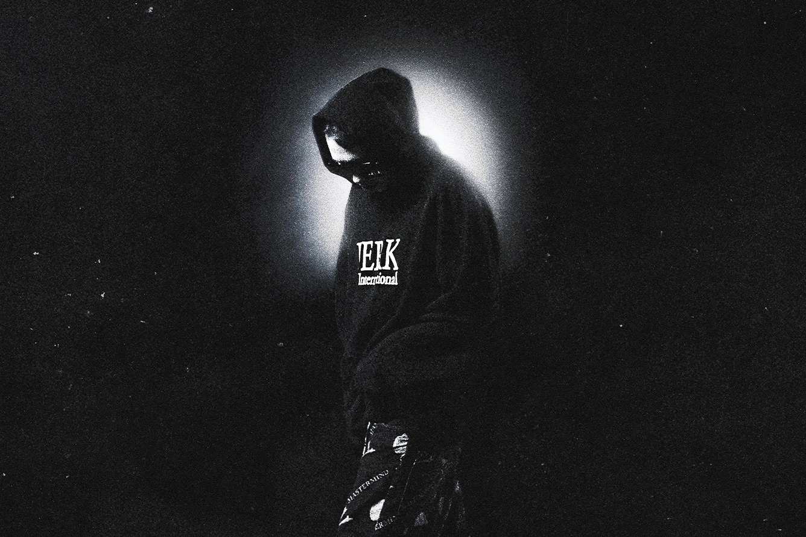

Ранние годы
Азат родился 25 июня 2003 года в Москве, окончил школу №2083. С детства отличался самодостаточностью и погружённостью в свой внутренний мир, что позже сформировало его творческий подход.
Начало карьеры
Музыкальную деятельность Азат начал в 2019 году, экспериментируя с битами и выкладывая треки на SoundCloud. Его первый релиз — сингл «Стиль» (2019 год).
Прорыв
Первую значительную популярность артист получил в 2023 году после выхода сингла «F*CK OFF», который стал вирусным в TikTok и собрал миллионы стримов на Spotify и «Яндекс Музыке». В том же году вышел его дебютный полноформатный альбом NIGHT FOR EVER, записанный преимущественно по ночам, что придало ему меланхоличную и интроспективную атмосферу. В альбом вошли хиты «СЕЙЧАС», «DANCE FLOOR» и «PHILARMONIA».